library(tidyverse)
library(here)
library(rio)
linelist <- import(here("processed_data", "combined_linelist.rds"), trust = TRUE) %>%
mutate(
age_cat = fct_relevel(age_cat, "Under 18", "18-29", "30-39", "40-49",
"50-59", "60-69", "70-79", "80+", "Unknown"),
outcome = fct_relevel(outcome, "Recover", "Death", "Unknown")
)Session 6: Plotting Basics with ggplot2
The grammar of graphics, histograms, mapping vs setting, scatter plots, box plots, labels, and themes
NoteIn this session you will learn to
- Explain the three parts every ggplot needs: data, aesthetics (
aes()), and a geometry (geom_) - Make histograms, scatter plots, and box plots
- Tell the difference between mapping a variable to color and setting a fixed color
- Add titles, axis labels, and a theme
Before you start: open the workshop folder in Positron (File → Open Folder…) and open student_scripts/Session 6 - Plotting Basics_STUDENT.R. This session starts from combined_linelist.rds and measles_final.rds, the files you saved in Session 3. If you missed it, ready-made copies are already in the processed_data/ folder.
Part 1: Set up
The factor order from Session 5 isn’t saved in the file, so we set it again right after importing.
Part 2: The grammar of graphics
Every ggplot is built from the same parts, added together with +:
| Part | Function | Question it answers |
|---|---|---|
| Data | ggplot(data = ...) |
Which data frame? |
| Aesthetics | aes() |
Which columns go on x, y, color, fill, …? |
| Geometry | geom_...() |
What shape: bars, points, boxes, lines? |
| Labels | labs() |
Title and axis names |
| Theme | theme_...() |
The overall look |
Build it up one piece at a time, and run the code after every + so you can see what each layer adds:
# 1. Data only: an empty canvas
ggplot(data = linelist)
# 2. Add aesthetics: the axes appear, but nothing is drawn yet
ggplot(data = linelist, mapping = aes(x = age_years))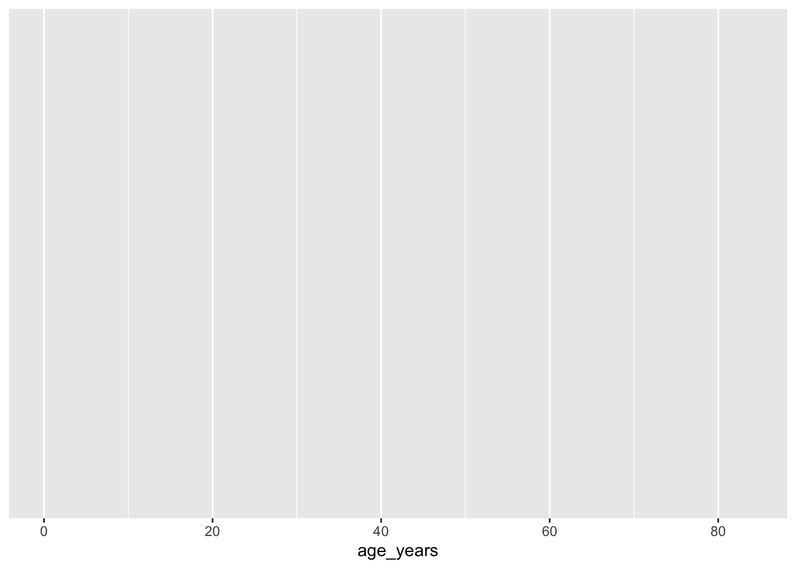
# 3. Add a geometry: now we have a plot
ggplot(data = linelist, mapping = aes(x = age_years)) +
geom_histogram()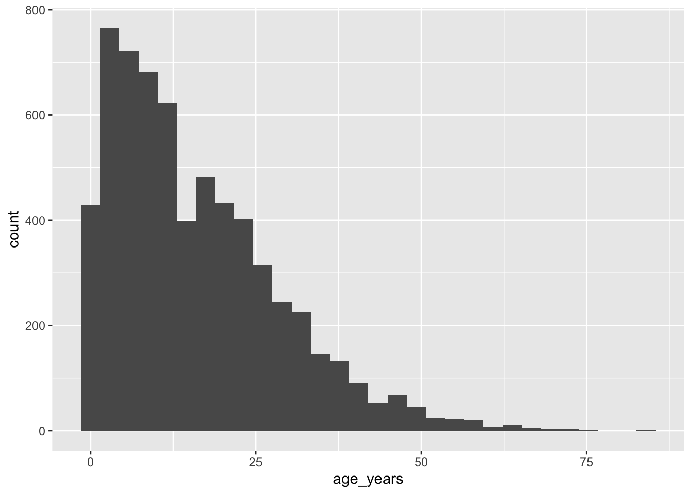
Important
+ not %>%
Layers of a ggplot are joined with +. Using %>% between ggplot layers is the most common beginner error. Like the pipe, + goes at the end of a line, not the start of the next one.
Part 3: Histograms
A histogram shows the distribution of one number: the values are grouped into ranges (“bins”), and each bar’s height is how many values fall in that range.
R warned us above that it picked 30 bins. Choose the bin width yourself:
ggplot(data = linelist, mapping = aes(x = age_years)) +
geom_histogram(binwidth = 5)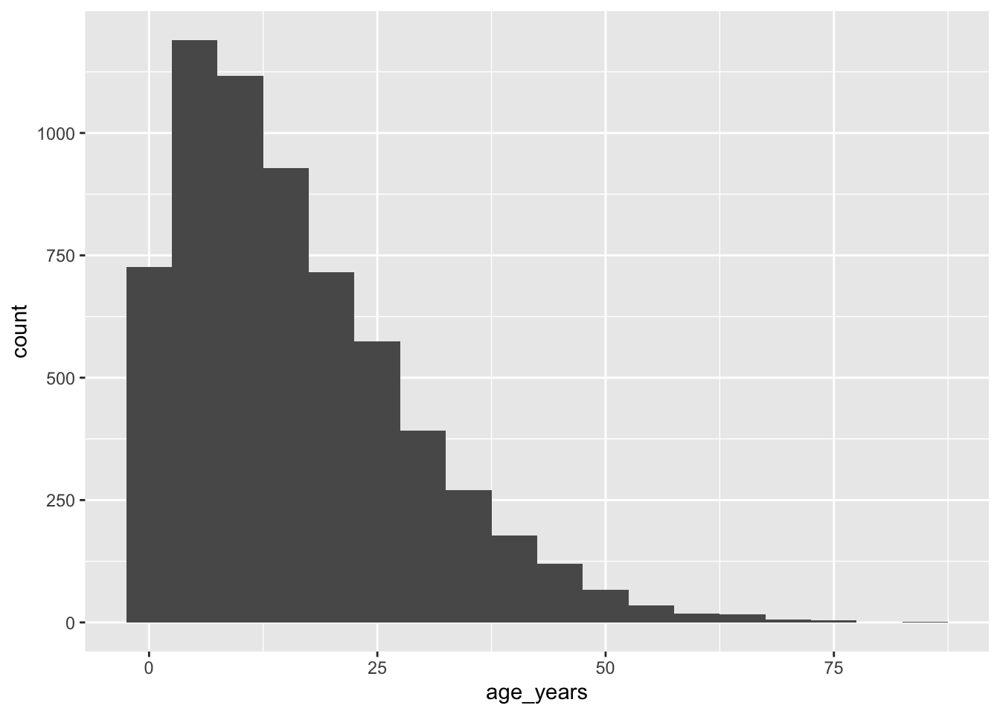
Each bar is now 5 years wide. Try binwidth = 1 and binwidth = 10 — what changes?
Fixed colors
Inside geom_histogram(), fill is the inside color and color is the outline. A white outline separates the bars.
ggplot(data = linelist, mapping = aes(x = age_years)) +
geom_histogram(binwidth = 5, fill = "#2a78d6", color = "white")
NoteColors in R
Use a name ("steelblue", "gray50") or a hex code ("#2a78d6"). Run colors() to see all 657 named colors.
Part 4: Mapping vs setting
This is the key idea of ggplot:
- Mapping — inside
aes(): a column controls the color. Different values get different colors, and you get a legend. - Setting — outside
aes(): one fixed color for everything.
# Mapping: fill depends on the outcome column
ggplot(data = linelist, mapping = aes(x = age_years, fill = outcome)) +
geom_histogram(binwidth = 5, color = "white")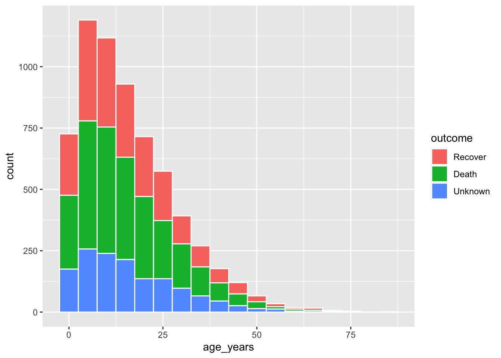
# Setting: every bar is blue
ggplot(data = linelist, mapping = aes(x = age_years)) +
geom_histogram(binwidth = 5, fill = "#2a78d6", color = "white")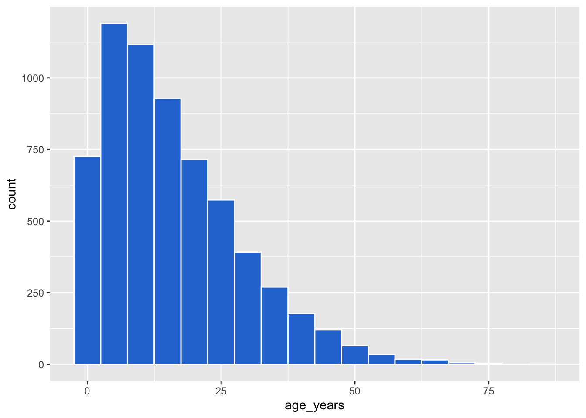
WarningCommon mistakes
aes(fill = "blue")does not make blue bars. To use one fixed color, putfill = "blue"in thegeom_...(), outsideaes().
Part 5: Scatter plots
A scatter plot shows the relationship between two numbers: one point per row.
ggplot(data = linelist, mapping = aes(x = age_years, y = wt_kg)) +
geom_point()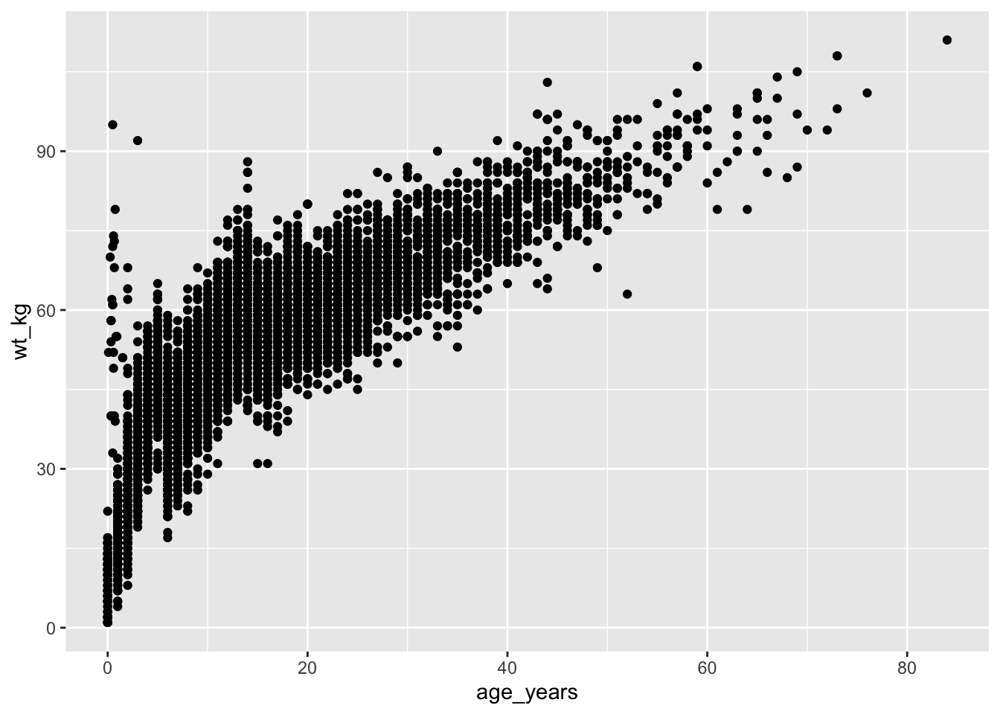
With 6,000+ points, many sit on top of each other. Make them smaller and see-through with size and alpha (0 = invisible, 1 = solid):
ggplot(data = linelist, mapping = aes(x = age_years, y = wt_kg)) +
geom_point(size = 1, alpha = 0.3)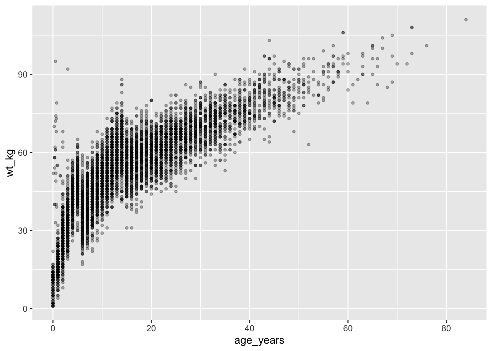
Map a third variable to color
ggplot(data = linelist, mapping = aes(x = age_years, y = wt_kg, color = gender)) +
geom_point(size = 1, alpha = 0.4)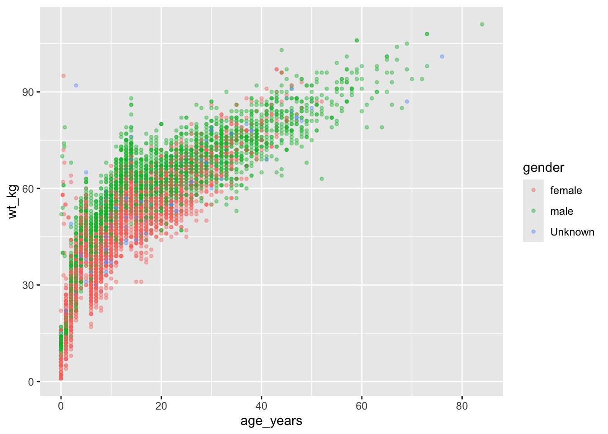
Add a trend line
geom_smooth() adds a trend line on top of the points. method = "lm" draws a straight line (linear model); se = FALSE hides the confidence band.
ggplot(data = linelist, mapping = aes(x = age_years, y = wt_kg)) +
geom_point(size = 1, alpha = 0.3) +
geom_smooth(method = "lm", se = FALSE, color = "#eb6834")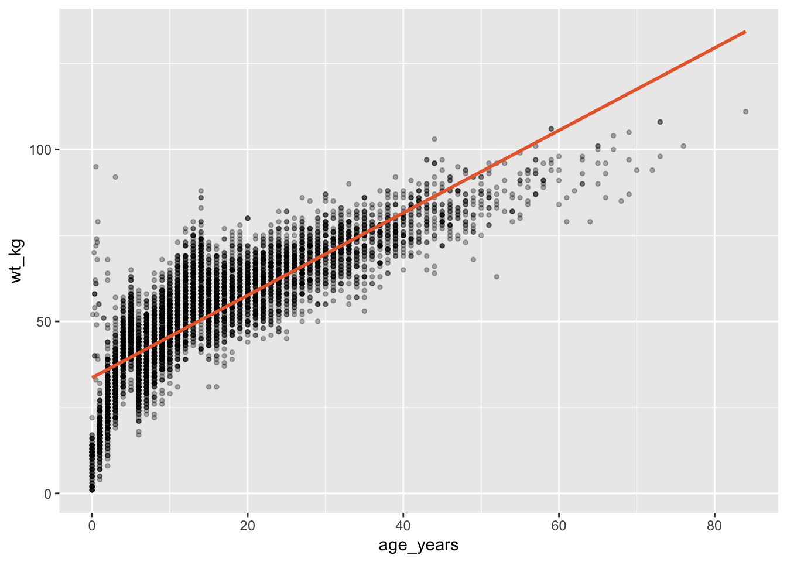
Filter right inside ggplot()
You can pipe data into ggplot(), so you can filter() first without making a new object:
linelist %>%
filter(fever == "yes") %>%
ggplot(mapping = aes(x = age_years, y = wt_kg)) +
geom_point(size = 1, alpha = 0.3)Notice the switch: %>% into ggplot(), then + between layers.
Part 6: Box plots
A box plot compares the distribution of a number across groups:
- The thick line is the median
- The box holds the middle 50% of values (from the 25th to the 75th percentile — the IQR)
- The whiskers reach the most extreme values within 1.5 × IQR of the box
- Points beyond the whiskers are possible outliers
ggplot(data = linelist, mapping = aes(x = gender, y = age_years)) +
geom_boxplot()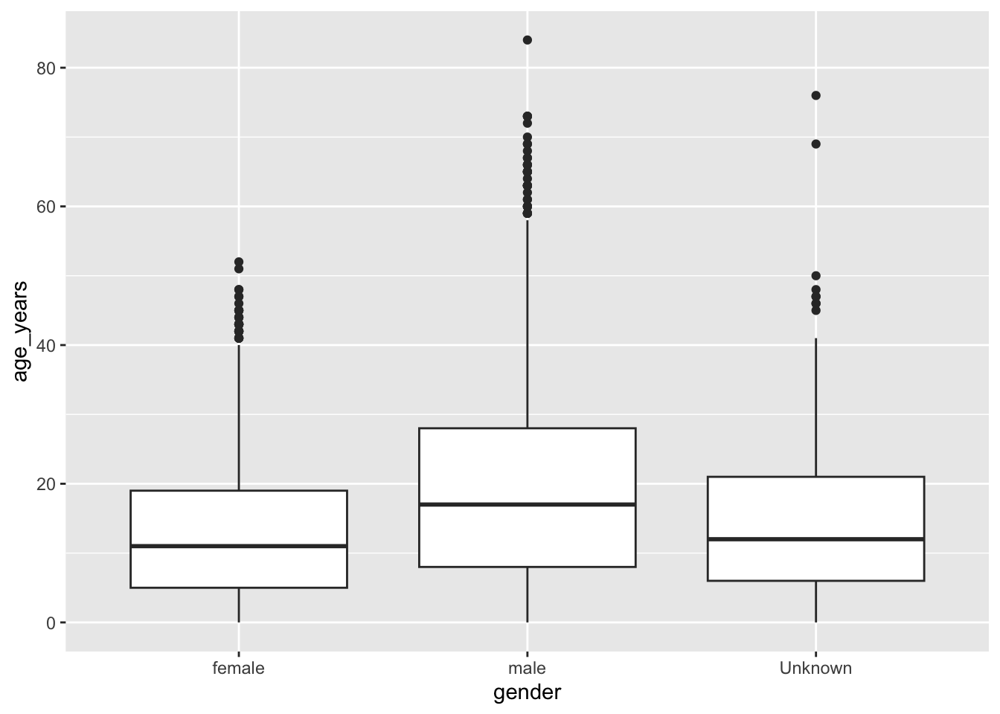
Clean it up
Remove the “Unknown” group, color the boxes, and drop the legend (the x-axis already names the groups):
linelist %>%
filter(gender != "Unknown") %>%
ggplot(mapping = aes(x = gender, y = age_years, fill = gender)) +
geom_boxplot() +
theme(legend.position = "none")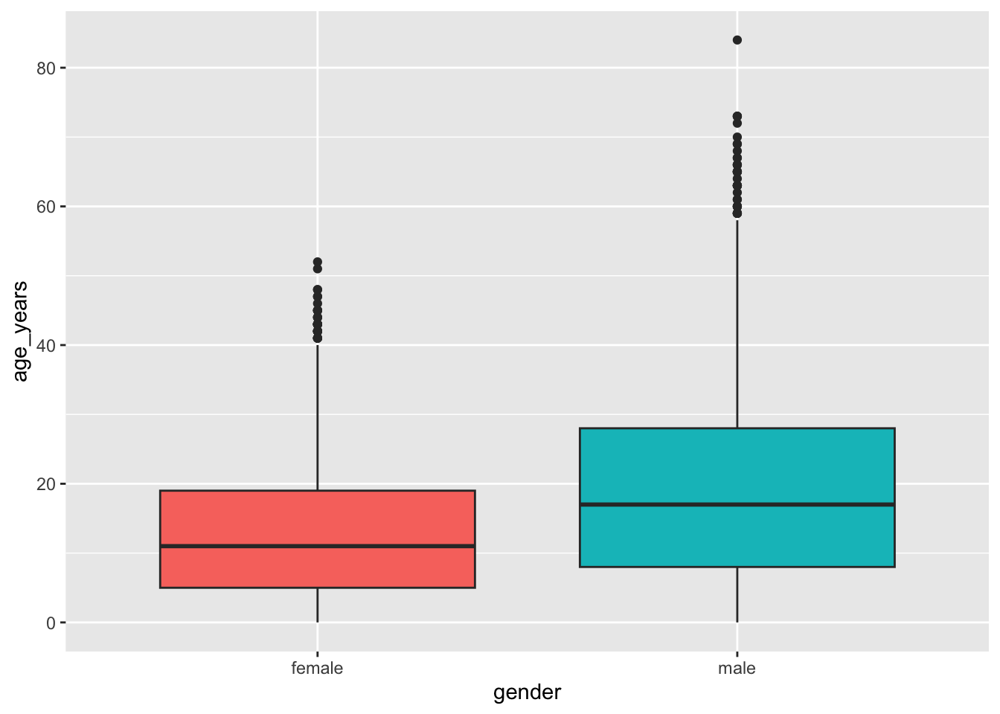
Add the mean
stat_summary() calculates a statistic for each group and draws it. Here, the mean as a diamond:
linelist %>%
filter(gender != "Unknown") %>%
ggplot(mapping = aes(x = gender, y = age_years, fill = gender)) +
geom_boxplot() +
stat_summary(fun = mean, geom = "point", shape = 23, size = 3, fill = "white") +
theme(legend.position = "none")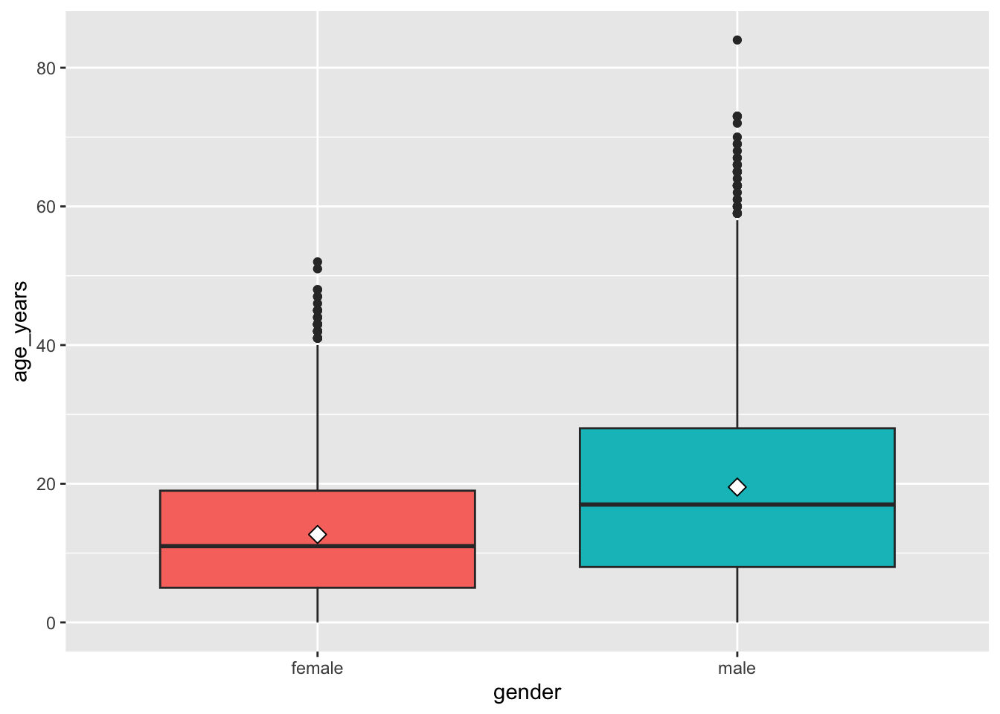
Note
geom_violin() shows the full shape of each distribution. Try swapping it in for geom_boxplot().
Part 7: Labels and themes
labs()
linelist %>%
filter(gender != "Unknown") %>%
ggplot(mapping = aes(x = gender, y = age_years, fill = gender)) +
geom_boxplot() +
labs(
title = "Age distribution by gender",
subtitle = "Cases with known gender",
x = "Gender",
y = "Age (years)",
caption = "Source: workshop outbreak linelist"
) +
theme(legend.position = "none")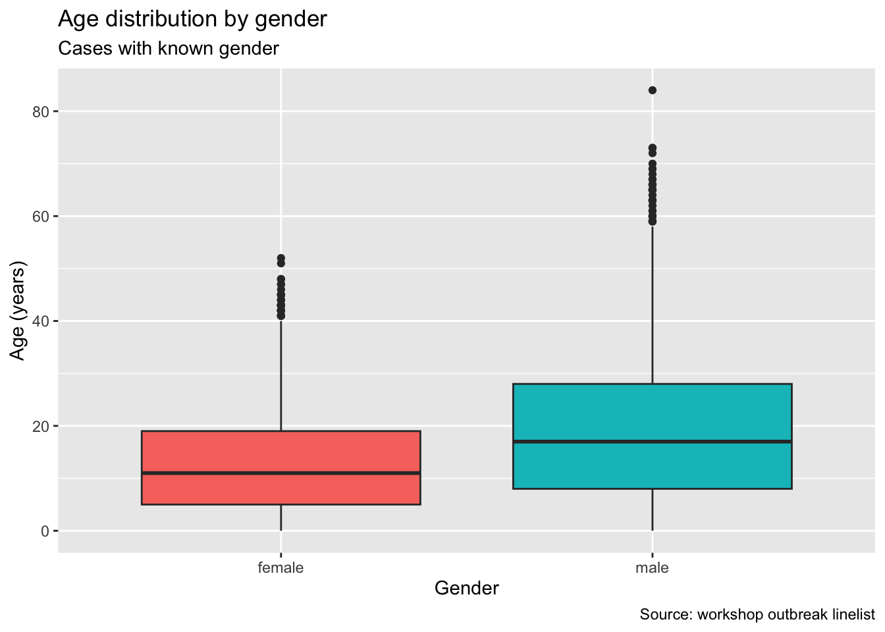
Themes
A theme changes the look of everything that isn’t data: background, grid lines, fonts. Try theme_minimal(), theme_classic(), theme_bw(), and theme_light().
ggplot(data = linelist, mapping = aes(x = age_years)) +
geom_histogram(binwidth = 5, fill = "#2a78d6", color = "white") +
labs(
title = "Age distribution of cases",
x = "Age (years)",
y = "Number of cases"
) +
theme_minimal(base_size = 14)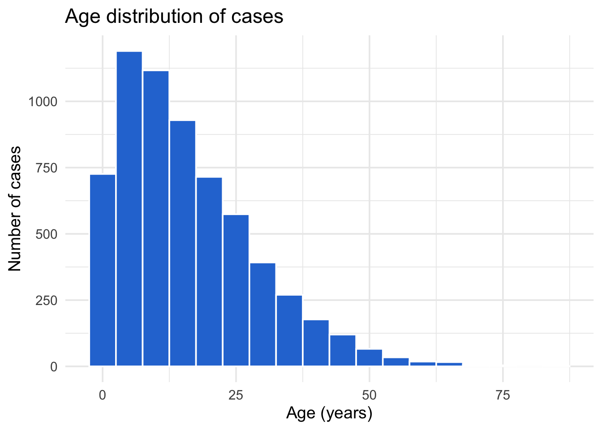
base_size makes all the text bigger — useful for slides.
WarningOrder matters
A complete theme like theme_minimal() resets everything, so put it before theme(legend.position = ...) or your change will be overwritten.
Save a plot as an object
A plot can be saved with <- and built on later:
age_plot <- ggplot(data = linelist, mapping = aes(x = age_years)) +
geom_histogram(binwidth = 5, fill = "#2a78d6", color = "white")
age_plot +
labs(title = "Age distribution of cases", x = "Age (years)", y = "Number of cases") +
theme_minimal()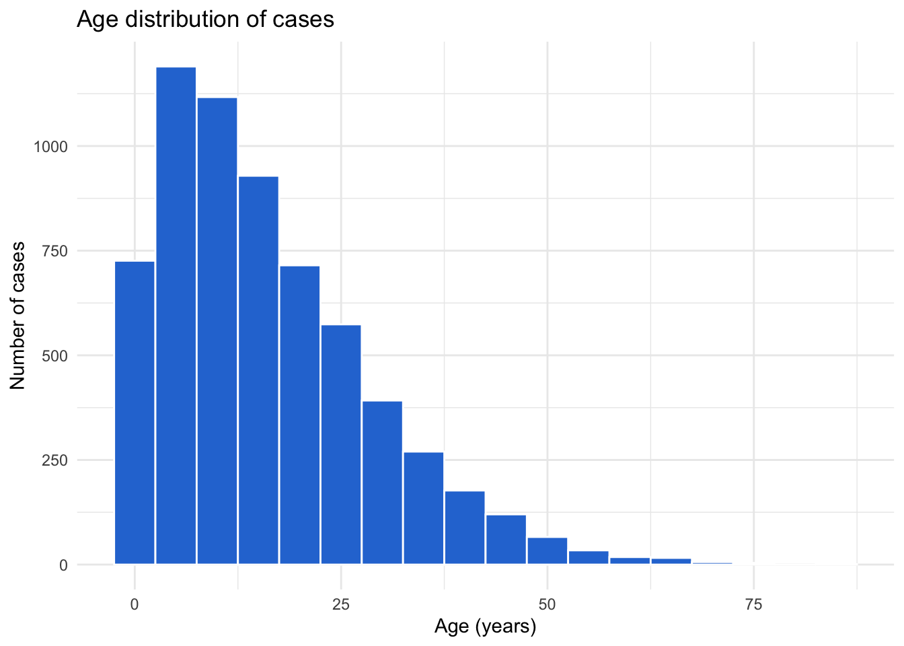
Tip⭐ Bonus
- Make the measles age histogram with
fill = vaccinated. Which ages have the most unvaccinated cases? - Swap
geom_boxplot()forgeom_violin()in your box plot. What does it show? - Brought your own data? Make a histogram, a scatter plot, and a box plot.
See the solutions file for the code.
Key points
- Every ggplot needs data, aesthetics (
aes()), and a geometry (geom_...()); layers are joined with+, not%>%. geom_histogram()shows the distribution of one number — choose thebinwidthyourself.- Mapping (inside
aes()) lets a column control color and adds a legend; setting (outsideaes()) uses one fixed color. geom_point()shows the relationship between two numbers;alphaandsizehelp with overlapping points, andgeom_smooth(method = "lm")adds a trend line.geom_boxplot()compares a number across groups;stat_summary()adds the mean.labs()adds titles and axis labels, and a complete theme liketheme_minimal()changes the overall look (put it beforetheme(...)changes).- You can pipe data into
ggplot()tofilter()first, and save a plot as an object with<-.
Next: Session 7 — Plotting further. We make bar charts, choose colors, draw epidemic curves, split plots into facets, and save plots to files.